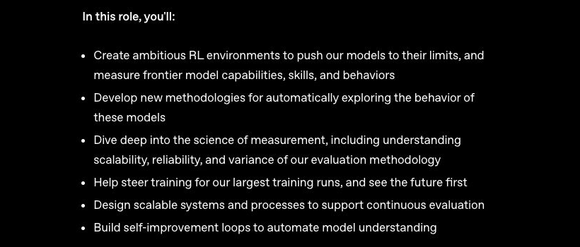
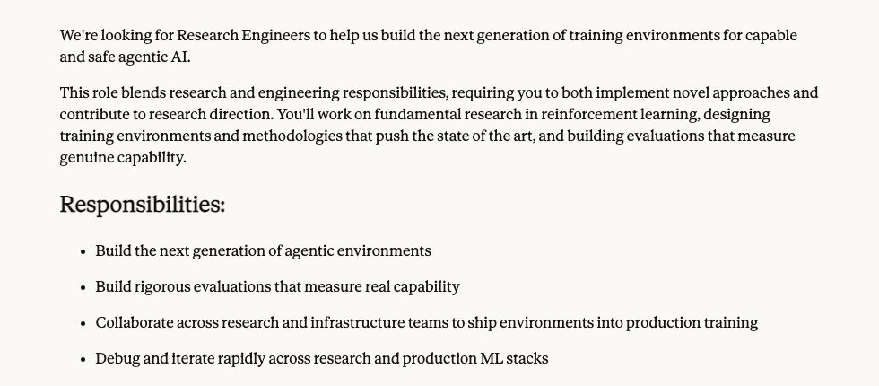

OPENAIResearch Engineer,
Research Engineer,
Frontier Evals & Environments

RL environments · measurement science · continuous evaluation
<answer>down</answer>

RL environments · measurement science · continuous evaluation

Agentic worlds · rigorous evaluations · production training
Same loop. Different state, actions, and verifier.
<answer>down</answer>
artifacts/title_board_replay.json · frozen seed-2001 checkpoint · greedy actions D D L D R R · all action probabilities and states are serialized.{"name": "Fredrik Thordendal"}
awaiting tool call…Before RL starts, let the current model try every candidate task four times.
One executable environment contains four routines: sample an instance, compute its hidden answer, render the prompt, and score the response.
A planted subset-sum task asks the model to choose numbers that hit a target; hidden code can generate and verify it cheaply.
numbers = shuffled candidatesplanted subset = [7, 11, 20]Each highlighted card is one action token predicted by our tiny Transformer. Python executes it and returns the next board.
The cards light up as the board changes. The percentage is the model's confidence in its chosen move.
artifacts/title_board_replay.json · checkpoint SHA-256 recorded in the repositoryWe compare two identical model copies: one stops after studying solved games; the other also plays and learns from reward.
90 unseen puzzles
average of 5 runs
EXPERIMENT_PROTOCOL.md · configs/final.json · results/final/analysis.jsonA tiny Transformer predicts one action token at a time. The environment-and-reward system around it is what transfers to real LLM reinforcement learning.
wall · player · box · goal
symbols describing the board—not English
produces four action scores
tokenizer.py · model.py · title_board_replay.jsonNormalize units, remove duplicates, flag impossible values, compute group statistics, and write a report.
assay.csv · schema.json · task.md
analysis.py · clean.csv · metrics.json · report.md
A post-outcome column predicts perfectly—but using it invalidates the submission.
Prevent accidental or strategic mutation of evidence.
Let failures and intermediate artifacts persist.
Never expose tests, truth, or reward secrets to the policy.
Return bounded text, metadata, or an image observation.
Create or patch files only inside authorized paths.
Execute a command with timeout, resource limits, and captured logs.
Every extra tool increases both capability and the attack surface.
{
"status": "error",
"exit_code": 1,
"stdout": "",
"stderr": "KeyError: concentration",
"changed_files": ["analysis.py"],
"budget": {"tools_left": 17},
"elapsed_ms": 284
}
Truncate huge logs while preserving the diagnostic tail.
Report files changed, return code, cost, and remaining budget.
The observation may explain failure—not reveal the hidden answer.
All required files exist and parse.
Values match independent recomputation.
Script works on hidden instances.
No forbidden feature or answer leakage.
Make correctness dominant. Add efficiency only after validity.
Off by default; allowlist when the task genuinely requires search.
Set wall time, memory, CPU, storage, and process ceilings.
Pass only episode-scoped credentials; never mount personal home directories.
{"t":0,"action":"read_file","path":"/input/assay.csv","cost":1,"status":"ok"}
{"t":1,"action":"write_file","path":"/workspace/analysis.py","status":"ok"}
{"t":2,"action":"run","command":"python analysis.py","exit_code":1,"error":"KeyError"}
{"t":3,"action":"write_file","path":"/workspace/analysis.py","status":"ok"}
{"t":4,"action":"run","command":"python analysis.py","exit_code":0}
{"t":5,"action":"submit","reward":0.92,"verdict":{"hidden_instances":9,"passed":8}}
Can we reconstruct every visible state?
Which action preceded improvement or collapse?
Does the final claim follow from logged evidence?
AI can write the experiment. It cannot decide that its own experiment is valid.
You are designing one executable LLM-agent task.
Objective: clean and analyze a scientific CSV.
Return: (1) initial workspace, (2) allowed actions,
(3) exact deliverables, (4) budgets, (5) hidden checks,
(6) three failure modes, and (7) a generator for 100 variants.
Constraints: no answer may appear in visible inputs; every score
must be independently recomputable; include one forbidden shortcut.
Do not write implementation code yet.
Your job: reject tasks with ambiguous success or unverifiable judgment.
Implement the attached frozen task contract as a Python environment. Required interface: reset(seed), step(action), submit(). Use typed JSON actions, deterministic seeded generation, bounded logs, per-step costs, immutable inputs, and an append-only trajectory.jsonl. Put hidden truth and verifier code outside the agent mount. Write tests proving: same seed → same instance; oracle passes; no-op fails; malformed actions recover without ending the episode.
Your job: inspect every mount, seed, timeout, and state transition.
Write an external verifier for the attached task. Recompute results from hidden raw data. Test output schemas, numerical tolerances, script rerunnability, hidden instances, forbidden-feature use, and provenance consistency. Return a score vector plus one scalar in [0,1]. Add adversarial tests for hard-coded answers, empty files, stale outputs, copied reference values, and NaN-based bypasses.
Your job: verify the verifier with an oracle, a no-op, and adversarial submissions.
Act as a hostile benchmark reviewer. Find every route to high reward without the intended capability: data leakage, weak tests, filename shortcuts, exploitable tolerances, seed memorization, judge bias, environment drift, and reward hacking. For each issue give: exploit, expected score inflation, minimal repair, and a regression test. Do not praise the benchmark.
Your job: fix measurement failures before collecting expensive rollouts.
obs = env.reset(seed)
while not env.done:
action = policy.act(obs, tools=env.schemas)
obs, cost = env.step(action)
reward, verdict = env.submit()
save(env.trajectory, reward, verdict)
State transition, tool execution, budgets, termination, and verification.
Which valid action to take next given observations.
How trajectories and rewards update model weights.
Success, reward components, calls, tokens, time.
At least one success, failure, and suspicious near-pass.
Images, task generator, verifier, model, and decoding config.
Same hidden task instance appears in train and test through different trajectories.
Test contains unseen schemas, corruption families, and random values.
Filter strong demonstrations. Train next-action prediction.
Compare successful and failed continuations from the same state.
Sample trajectories, compute advantage, update the policy.
Find where strategy became unproductive.
Keep valid work before the pivot.
Generate corrected continuations from restored state.
FrontierAgent runtime · ReAct and Agent Team · public evaluation harness · 36B Mini weights and quantizations · FrontierChallenge task package · trajectory generation.
Full training corpus · exact SFT mixture · model-soup recipes · distributed rollout infrastructure · PIVOT-RL code · complete hyperparameters · flagship checkpoint · all internal graders.
Call the project a partial reproduction plus an independent extension.
| Benchmark | ReAct | Agent Team | Difference |
|---|---|---|---|
| APEX-Agents | 34.4 | 38.5 | +4.1 |
| GDPVal | 69.5 | 78.8 | +9.3 |
| FrontierFinance | 48.7 | 54.3 | +5.6 |
| FrontierScience-Research | 55.0 | 63.3 | +8.3 |
| BioMysteryBench | 23.5 | 35.3 | +11.8 |
| Humanity’s Last Exam | 53.2 | 56.1 | +2.9 |
Within the authors’ setups, Agent Team scored higher than ReAct on the six shown comparisons.
Training, prompting, decomposition quality, call budget, and verifier interaction are not fully separated.
The paper does not prove that more agents always help or that coordination is cheaper.
Our extension should isolate one mechanism under a matched budget.
Do stronger hidden tests reduce reward hacking but slow learning?
Which diversity—schema, corruption, or values—drives transfer?
Do atomic tools learn better than unrestricted shell commands?
When does retrieval improve truth versus increase distraction?
Does coordination still help with equal total model calls?
Can automatic pivot detectors match human failure labels?
20 schemas × 100 trajectories each.
100 schemas × 20 trajectories each.
2,000 trajectories, model, optimizer, and test set.
Outcome: pass rate on unseen schemas and corruption families.
Generator version, hashes, train/dev/test families.
Starting checkpoint, optimizer, rollouts, update count.
Seeds, decoding, budget, timeout, verifier version.
Primary metric, exclusion rule, confidence interval.
Task generator, Docker image, verifier, configs, trajectories, per-seed metrics.
One best seed, one cherry-picked trajectory, or screenshots without raw receipts.
A polished agent demo usually proves only the first rung.
Your first portfolio milestone is not GPU-scale RL. It is a verified, rerunnable environment with evidence a research team can inspect.